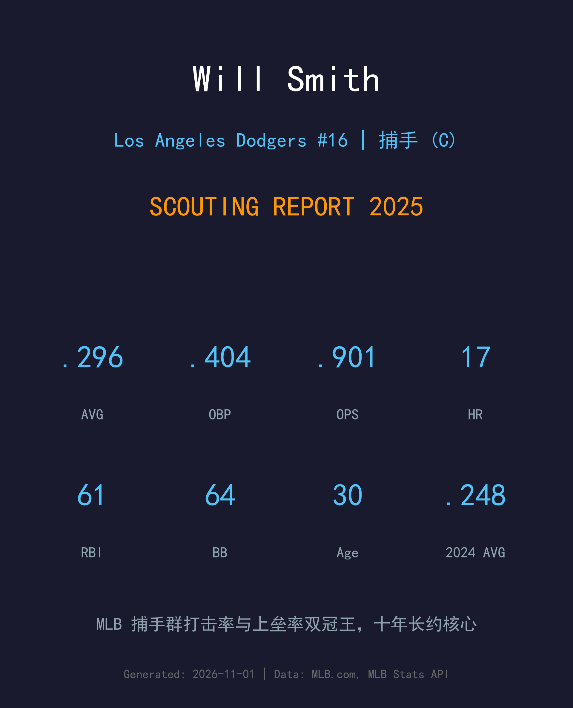
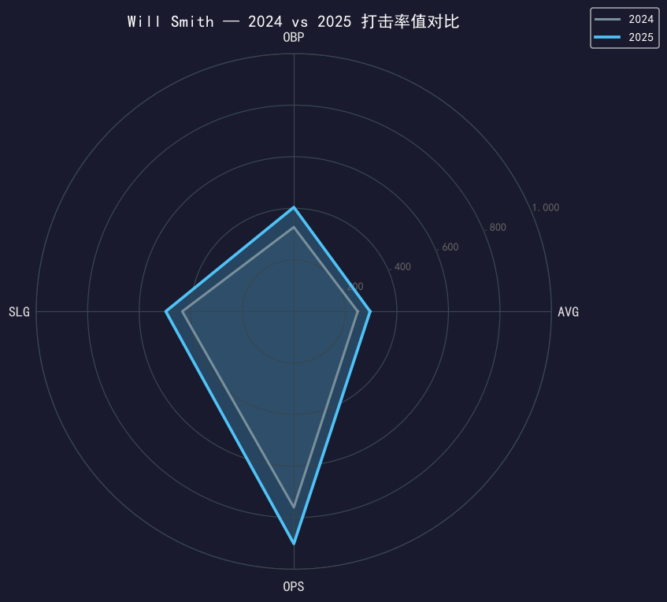
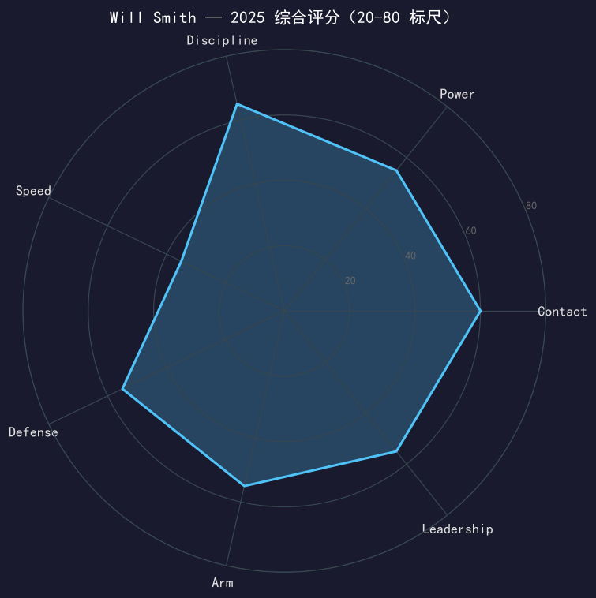

Los Angeles Dodgers #16 | 捕手 | 右打 | 全队打击率与上垒率双冠王

Will Smith 刚刚打出了一个属于联盟最佳攻击型捕手的赛季：在至少 300 个打席的捕手中，他的.296 打击率与 .404 上垒率都是大联盟捕手位置的第一名，OPS .901 仅次于 Cal Raleigh 与 Hunter Goodman——他还是道奇全队的打击率王和上垒率王。
这是一份从每个维度都在进步的答卷：三围从 2024 年的 .248/.327/.433 全面跃升到 .296/.404/.497，保送率 14.7% 创生涯新高，三振率压到生涯最低的 20.4%。连续第三年入选全明星、入选赛季末 All-MLB 第二阵容，而此刻他正处于 2024 年 3 月签下的 10 年长约的第一段——这份合同正在以最快的速度证明其价值。
9 月的右手挫伤让他的常规赛提前结束，但他在 NLDS 首战即归队，并接满了道奇夺冠之路的全部 15 场比赛。30 岁，他是道奇当下最不可替代的非投手球员之一。
从 2023 年首次入选开始，连续三个赛季代表国联出战全明星赛，稳固「国联第一捕手」的讨论席位。
73 次盗垒尝试中抓下 33%，在所有至少面对 28 次盗垒的捕手中排名第一；7 月 5 日对酿酒人单场三响，成为道奇队史第四位单场 3 轰的捕手。
MLB 全体捕手中打击率、上垒率双第一，OPS 第三；入选 All-MLB 第二阵容。季后赛 17 场中 15 场上垒，世界大赛 8 安 2 轰、OPS .886。
作为铁打的主战捕手连夺两冠；2025 年世界大赛第 2 场在多伦多单场 3 分打点（含打破平局的第七局阳春炮），是系列赛转折点之一。

| 赛季 | G | PA | AVG | OBP | SLG | OPS | HR | RBI | 2B | BB | SO |
|---|---|---|---|---|---|---|---|---|---|---|---|
| 2024 | 128 | 544 | .248 | .327 | .433 | .760 | 20 | 75 | 24 | 51 | 105 |
| 2025 | 110 | 436 | .296 | .404 | .497 | .901 | 17 | 61 | 20 | 64 | 89 |
这是一次「质量优先于数量」的跃升：出赛从 128 场降到 110 场（9 月右手挫伤），但每项率值都在暴涨——AVG +48 点、OBP +77 点、OPS +141 点。OBP 与 AVG 之间 108 点的差距是生涯最大，说明他开始把出色的选球 eye 转化成实打实的上垒产量。5 月是他生涯最佳月份：.370/.484/.534，91 个打席 16 保送仅 11 三振。
Smith 的挥棒是教科书的「短路径 + 完整延伸」：5'10" 的身材不靠蛮力，而靠极佳的击球时机与线路控制。2025 年他的击球落点分布更平衡，长打率站上 .497 的同时三振率降到 20.4%——对捕手来说这是精英级的「接触 + 长打」双达标。17 轰的数字在他缩水出赛的前提下，折算完整赛季仍是 20+ 轰的产能。
生涯早期 Smith 已是好 eye 的打者，但 2025 年他把这项工具升级成了主要武器：14.7% 保送率、64 次保送均为生涯新高，且保送质量的提升直接推高了实战价值——.404 的上垒率让他成为道奇打线里最可靠的「 innings 延长器 」。在一个三振时代，他证明了自己可以用「不打坏球」而不是「打中好球」来统治比赛。
他的阻杀能力在 2024 年已是联盟第一（33% CS%），2025 年继续保持在优质区间；8 月 17 日对教士的比赛，他在前两局抓下 3 名盗垒者——单局双杀自 2017 年 Yasmani Grandal 后道奇首人，前两局三杀更是 1974 年以来队史首见。配球与挡接的稳定性也让他成为投手群最信任的幕后指挥。
上半年的他是 MVP 讨论边缘的名字（.323/.425/.540、12 轰 46 打点入选全明星）；6 月 18 日与 8 月 31 日两支再见全垒打是全季最响亮的个人注脚。9 月 10 日的右手挫伤一度让人担心他的季后赛，但他赶在 NLDS 首战归队，并以「季后赛 17 场 15 场上垒」的表现为赛季画上完美句号。

联盟最佳攻击型捕手，攻守两端都是球队地基
A- 级 / 明星级捕手
道奇 2025 季后赛之路：外卡轮 2-0 红人 → NLDS 3-1 费城人 → NLCS 4-0 酿酒人 → 世界大赛 4-3 多伦多蓝鸟（二连霸）。
| G | PA | AVG | OBP | SLG | OPS | HR | RBI | BB | SO |
|---|---|---|---|---|---|---|---|---|---|
| 15 | 66 | .276 | .364 | .414 | .778 | 2 | 8 | 6 | 18 |
Will Smith 的 10 年长约运行到第二年，而他已经交出了合同年的价值。接下来的问题是耐用度而非能力：捕手位置的累积损耗是这条长约最大的敌人。道奇已经有意识地用备份捕手切走他常规赛的边角时间，把完整的他留到十月——2025 年的剧本（伤愈即巅峰归来）证明这套管理是有效的。
2026 目标：保持健康出赛 120+ 场，冲击生涯首个 25 轰赛季
中期：继续竞逐「国联第一捕手」，All-MLB 一阵是下一个台阶
长期：道奇 2030 年代中轴的核心，未来队史捕手纪录的挑战者
Will Smith 出生于肯塔基州路易斯维尔，高中时是全州明星级双栖球员（高四 .528 打击率 + 投球 ERA 0.87）。他选择留在家乡为路易斯维尔大学效力三年并担任队长，2016 年选秀首轮第 32 顺位被道奇选中——从被选中那天起，他就一直在道奇体系里。
2019 年 5 月 28 日完成大联盟首秀后，他用三年时间从「新秀捕手」变成「国联第一捕手」的讨论主角：2023 年首次入选全明星，2024 年春天与球队续下 10 年长约，同年以 33% 的阻杀率登顶联盟，2025 年再把打击三围推上 .296/.404/.497 的巅峰。在道奇这支巨星云集的球队里，他是最安静的那块地基。
场下的 Smith 与妻子 Cara 育有两个女儿；他的父亲 Mark 与母亲 Julie 见证了从肯塔基到洛杉矶的全程。对道奇球迷而言，「Smitty」这个绰号代表的已经不仅是一位捕手，而是这个冠军时代的隐形署名。